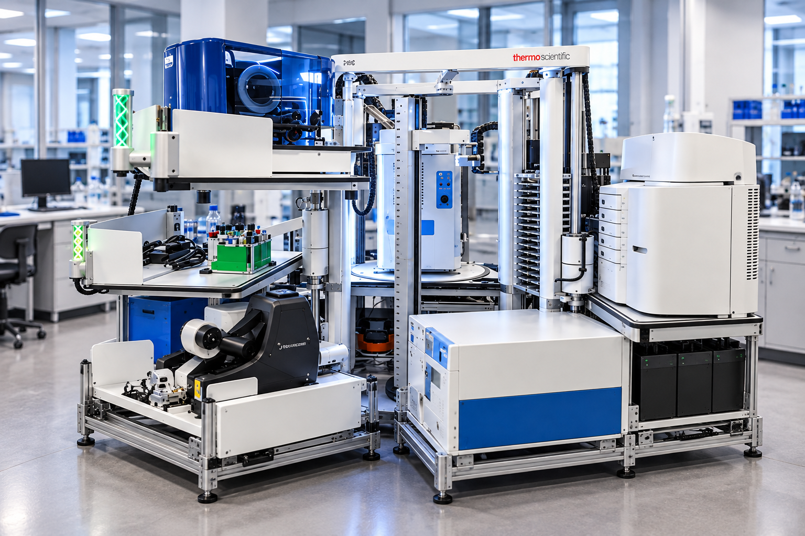

SynBio Suite
inSPIRE integrated automation platform
Programmable, scheduled workflows coordinating multiple instruments for DNA assembly, PCR, RT-qPCR, in vitro transcription, nucleic-acid analysis, and automated plate processing.